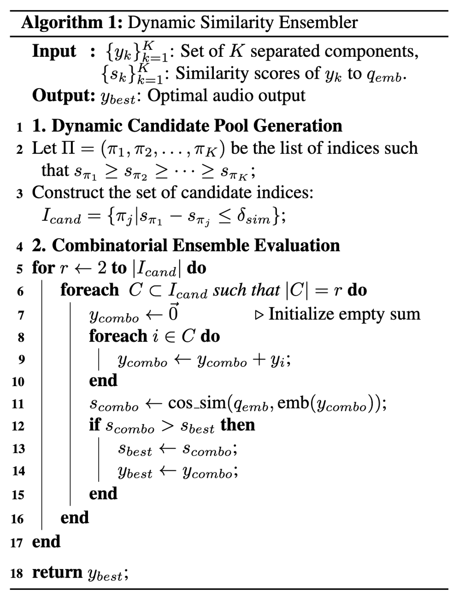
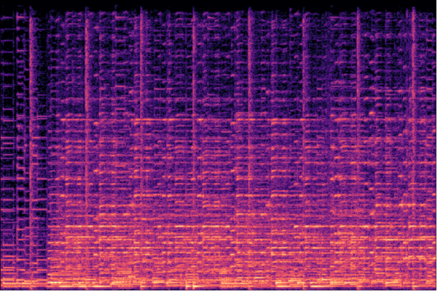
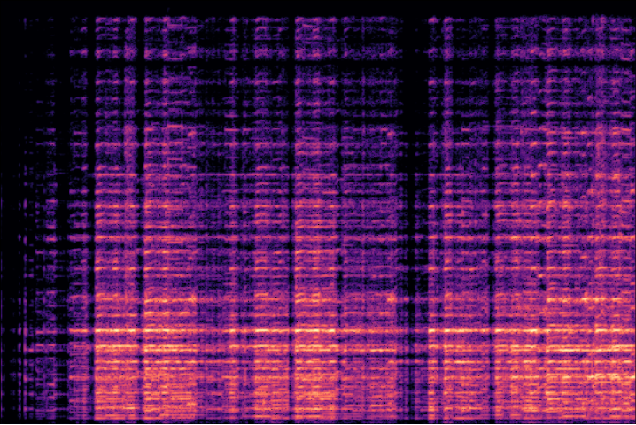
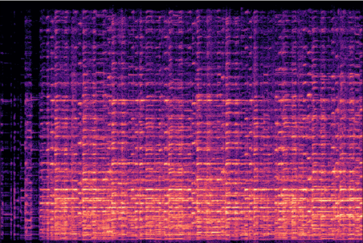
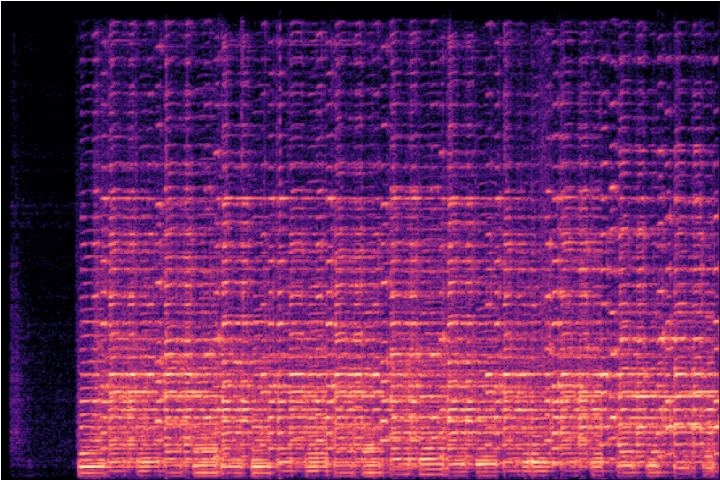

Language-queried Audio Source Separation (LASS)
This project explores language-queried audio source separation (LASS), a paradigm that allows users to extract specific sounds from complex audio mixtures using natural language queries.
For example, given a piece of music with multiple instruments, a text query such as “accordion” prompts the system to isolate and output only the accordion part from the mixture. This approach offers a more flexible and intuitive interaction with audio separation systems, allowing users to describe their desired output in plain language rather than relying on predefined labels or manual filtering.
Method
We propose a lightweight and interpretable framework for language-queried audio source separation (LASS) by integrating Non-negative Matrix Factorization (NMF) with Contrastive Language-Audio Pretraining (CLAP) embeddings. The system takes as input a mixture audio signal and a natural language query, and outputs the audio source most relevant to the query. Unlike end-to-end deep learning models, our approach requires no training or large-scale datasets, making it computationally efficient and suitable for real-time or resource-limited applications.
To enhance separation quality, we introduce a dynamic selection module that adaptively merges audio components based on similarity to the text query, effectively reducing issues such as source fragmentation and imbalance. Additionally, we explore adaptive time-domain filtering to improve temporal smoothness, particularly for tonal instruments such as the erhu and violin. While our method is less accurate than large-scale deep learning approaches like AudioSep, it prioritizes efficiency, interpretability, and extensibility.

Framework Overview
As illustrated in Figure 1, we begin by applying the Short-Time Fourier Transform (STFT) to the mixture audio to obtain its spectrogram, which contains both magnitude and phase information. The magnitude spectrogram is decomposed using NMF into several non-negative components. Each component is then recombined with the original phase and converted back to waveform segments via inverse STFT. These audio segments are passed through a CLAP audio encoder to obtain embeddings, while the text query is processed by a CLAP text encoder to generate a text embedding. By computing cosine similarity between the text and audio embeddings, we identify the component(s) most relevant to the query through the dynamic selection strategy, which then produces the final separated audio output.
1. Non-negative Matrix Factorization (NMF)
We apply NMF to decompose the magnitude spectrogram into 2 non-negative matrices, \(W\) and \(H\), such that:
$$ V \approx WH $$We experimented with Itakura-Saito (IS) divergence and Kullback-Leibler (KL) divergence as cost functions. KL divergence yielded better results, and thus we adopt it:
$$ D_{KL}(A \| B) = \sum_{i,j} \left( A_{ij} \log \frac{A_{ij}}{B_{ij}} - A_{ij} + B_{ij} \right) $$ The corresponding multiplicative update rules are: $$ H_{kn} \leftarrow H_{kn} \frac{\sum_m W_{mk} \frac{V_{mn}}{(WH)_{mn}}}{\sum_m W_{mk}}, \quad W_{mk} \leftarrow W_{mk} \frac{\sum_n H_{kn} \frac{V_{mn}}{(WH)_{mn}}}{\sum_n H_{kn}} $$2. Dynamic Selection
To address source fragmentation, we propose a dynamic selection module that ensembles NMF components based on their similarity to the text embedding. Specifically, cosine similarity between the CLAP text embedding and each audio embedding guides the selection of relevant components, which are then combined into the final separated output.

Results
Text query: Accordion

STFT Spectrogram - Mixture

STFT Spectrogram - NMF

STFT Spectrogram - NMF + Dynamic Selection

STFT Spectrogram - Ground Truth